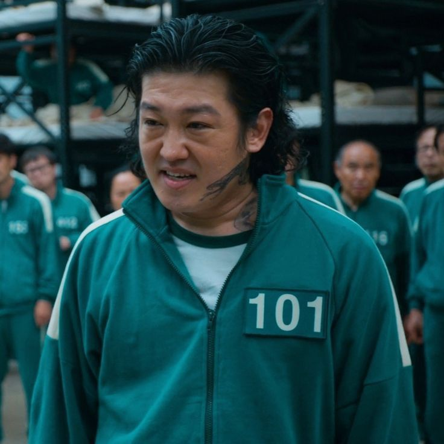

| Lee Jung-jae |
Seong Gi-hun (성기훈 / số 456) |
|
Seong Gi-hun là một tài xế đã ly hôn, mất quyền nuôi con do không có khả năng tài chính. Anh sống cùng mẹ già bệnh tật và vật lộn để hỗ trợ tài chính cho gia đình. Anh quyết định tham gia trò chơi để kiếm tiền chữa bệnh cho mẹ, giải quyết các khoản nợ của mình và giành quyền nuôi con gái. |
| Wi Ha-joon |
Hwang Jun-ho (황준호) |
|
Một sĩ quan cảnh sát thâm nhập vào trò chơi nhằm tìm kiếm người anh trai Hwang In-ho đã thất lạc lâu ngày. |
| Park Hae-soo |
Cho Sang-woo (조상우 / số 218) |
|
Cựu trưởng nhóm đầu tư tại một công ty chứng khoán danh tiếng, tốt nghiệp Đại học Quốc gia Seoul. Anh vướng vào các vụ gian lận tài chính và tham gia trò chơi để trả nợ. |
| Oh Yeong-su |
Oh Il-nam (오일남 / số 001) |
|
Một người già mắc bệnh nan y, tham gia trò chơi với hy vọng tận hưởng những khoảnh khắc cuối đời. |
| Heo Sung-tae |
Jang Deok-su (장덕수 / số 101) |
 |
Một tên xã hội đen máu lạnh, tham gia trò chơi để thoát khỏi những món nợ cờ bạc. |
| Jung Ho-yeon |
Kang Sae-byeok (강새벽 / số 067) |
|
Một người đào tẩu khỏi Bắc Triều Tiên, tham gia trò chơi để kiếm tiền đưa mẹ ra khỏi trại tị nạn. |
| Kim Joo-ryoung |
Han Mi-nyeo (한미녀 / số 212) |
|
Một người phụ nữ có tính cách thất thường và mưu mô, làm mọi cách để sống sót. |
| Anupam Tripathi |
Abdul Ali (알리 / số 199) |
 |
Một công nhân nhập cư người Pakistan, tham gia trò chơi để kiếm tiền nuôi gia đình. |